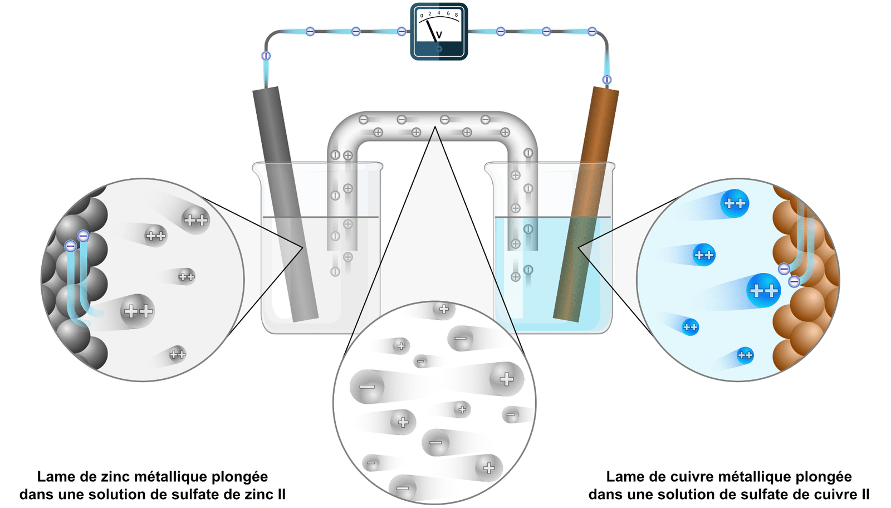
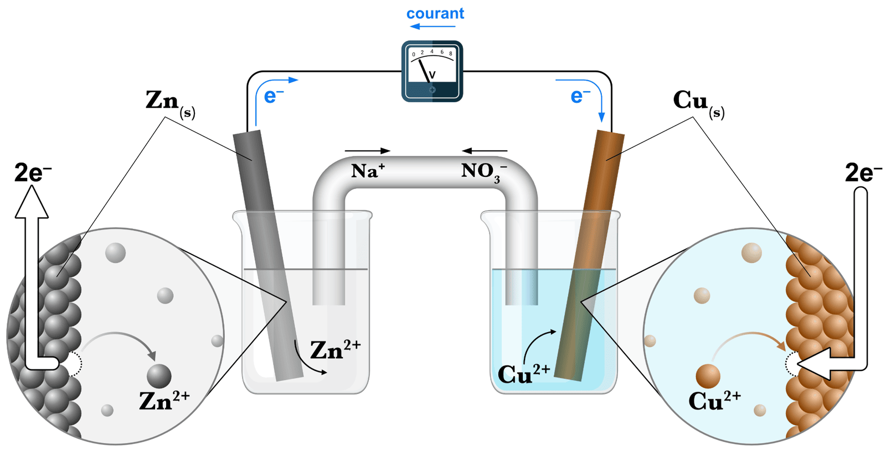
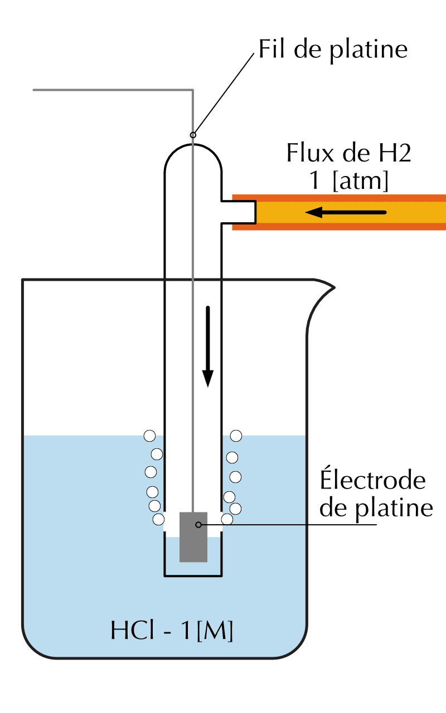
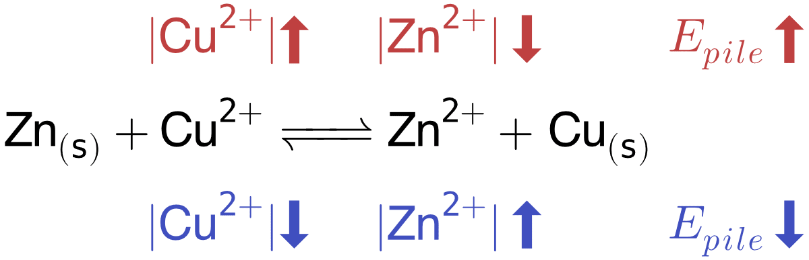
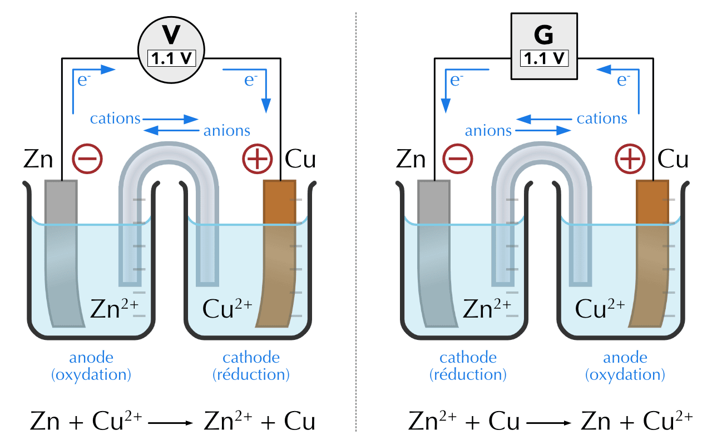
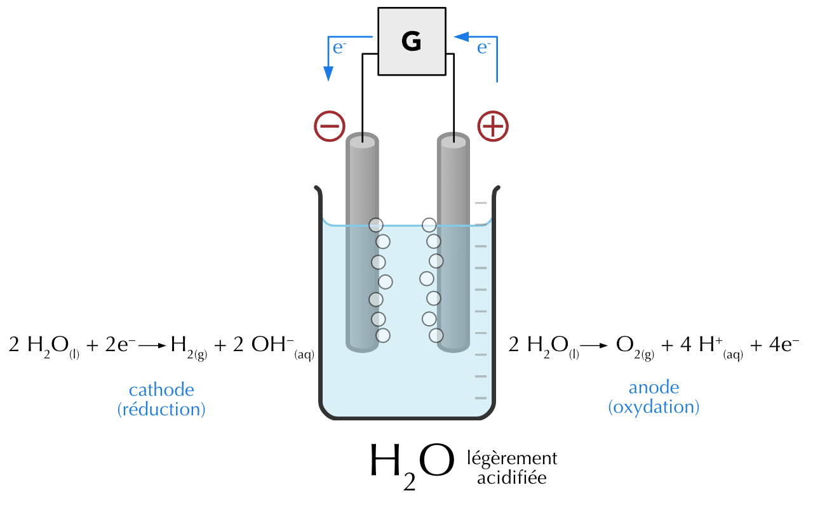
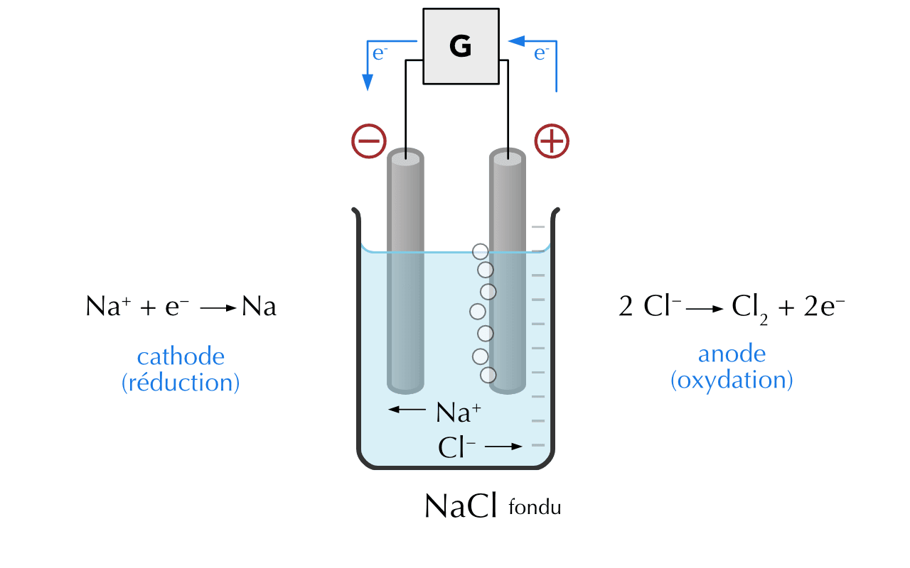
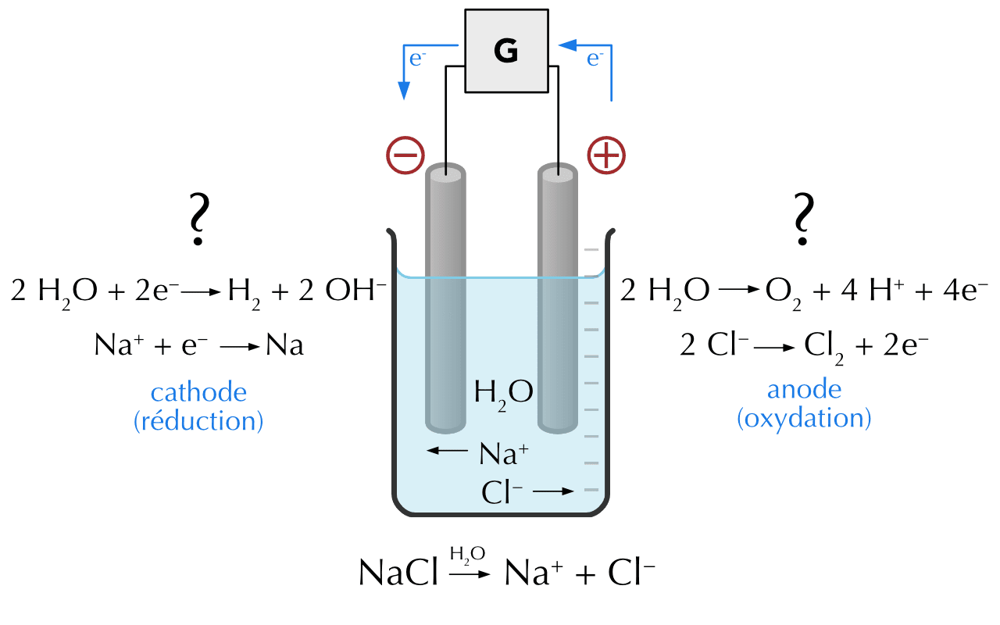
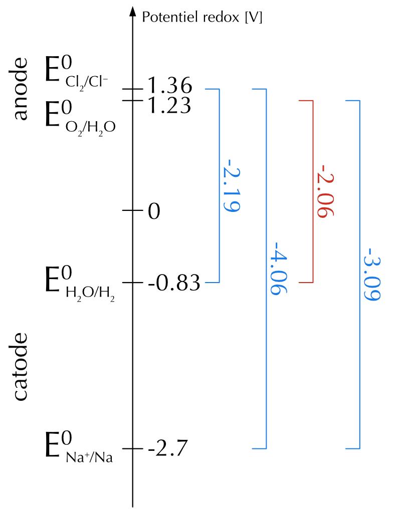
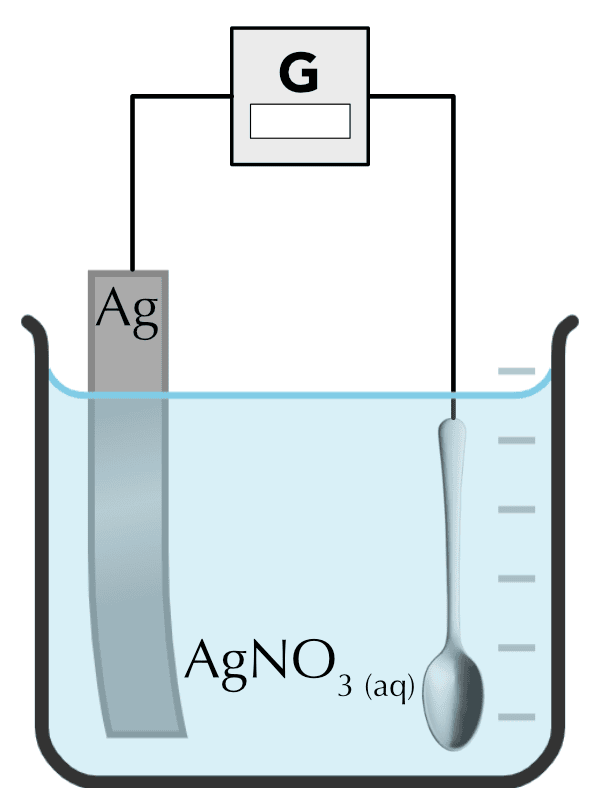

21 Électrochimie
- Décrire la constitution et le fonctionnement d’une pile électrochimique.
- Décrire comment sont définis les potentiels standards de réduction.
- Définir le potentiel électrique d’une pile.
- Utiliser les potentiels standards pour prédire la spontanéité d’une réaction.
- Décrire la constitution et le fonctionnement d’une cellule électrolytique.
- Prédire la réaction d’électrolyse d’un milieu réactionnel.
- Utiliser la loi de Faraday pour effectuer des calculs stœchiométriques.
L’électricité qui circule dans les lignes électriques est consommée lorsqu’elle est produite, mais pour bien d’autres applications, l’énergie électrique doit être stockée. Dans de tels cas, l’énergie électrique est convertie en énergie chimique, qui peut être stockée et transportée, puis reconvertie en électricité. Les batteries sont les dispositifs les plus utilisés pour stoquer l’énergie électrique sous forme d’énergie chimique. L’électrochimie est le champ d’étude de la chimie qui étudie les relations entre l’électricité et les réactions chimiques.
21.1 Les piles électrochimique
Dans une pile électrochimique, une réaction d’oxydoréduction spontanée permet de produire de l’électricité. Les demi-réactions ont lieu dans deux compartiments séparés que l’on appelle des demi-piles. Les électrodes de ces demi-piles sont reliées par un fil, et les solutions d’électrolytes, par un pont salin.
Lorsque du zinc métallique est placé dans une solution contenant des ions cuivre (II), le Zn est oxydé en ions Zn2+ tandis que les ions Cu2+ sont réduits en Cu, ou cuivre métallique. Ceci peut être représenté par l’équatin de réaction suivante :
\[ \ce{Zn(s) + Cu^{2+}(aq) -> Zn^{2+}(aq) + Cu(s)} \]
Des électrons sont transférés dans la réaction Zn/Cu2+, mais le système ne génère pas d’énergie électrique car l’oxydant (Cu2+) et le réducteur (Zn) se trouvent dans le même bécher. Cependant, si nous séparons physiquement les demi-réactions et les connectons par un circuit externe, les électrons perdus par le zinc produisent un courant électrique lorsqu’ils se déplacent dans le circuit vers les ions cuivre qui les gagnent.

21.1.1 Constitution d’une pile
- Une plaque d’un métal M, appelée électrode, plongeant dans une solution contenant des cations Mn+ constitue une demi-pile.
- Une pile est formée par deux demi-piles reliées par un pont salin.
- Le pont salin permet le passage du courant entre les deux demi-piles en autorisant le déplacement d’ions entre les deux piles.

21.1.2 Fonctionnement d’une pile
- L’anode (-)
- La demi-pile où a lieu l’oxydation est appelée compartiment anodique et toujours représentée à gauche.
- Le compartiment anodique consiste en une barre de zinc métallique (l’anode) immergée dans une solution aqueuse de Zn2+ (ZnSO4, par exemple).
- Le zinc métallique va céder deux électrons qui circuleront dans l’anode. Les ions Zn2+ ainsi formés si dissolvent dans la solution.
- La cathode (+)
- La demi-pile où a lieu la réduction est appelée compartiment cathodique et toujours représentée à droite.
- Le compartiment cathodique consiste en une barre de cuivre métallique (la cathode) immergée dans une solution aqueuse de Cu2+ (CuSO4, par exemple).
- Les ions Cu2+ vont accepter deux électrons qui circuleront dans la cathode. Le cuivre métallique ainsi formé va s’agréger à la cathode.
- Signes des électrodes
- La charge des électrodes est déterminée par la source des électrons et la direction du flux d’électrons dans le circuit.
- Dans cette pile, les atomes de Zn sont oxydés à l’anode en ions Zn2+ et constituent la source d’électrons.
- Les ions Zn2+ entrent dans le pont sallin tandis que les électrons se déplacent à travers l’anode et le fil.
- Les électrons circulent de gauche à droite dans le fil jusqu’à la cathode, où les ions Cu2+ présents dans la solution sont réduits en cuivre métallique.
- Lorsque la pile fonctionne, les électrons sont continuellement générés à l’anode et consommés à la cathode. Par conséquent, l’anode a un excès d’électrons et la cathode un déficit d’électrons.
- L’anode porte le signe négatif.
- La cathode porte le signe positif.
- Le pont salin
- Une pile ne peut fonctionner que si le circuit est complété par un pont sallin.
- Le pont salin est un tube en U inversé contenant des ions spectateurs (NaNO3, par exemple) dissous dans un gel qui permet aux ions de diffuser entre les demi-piles.
- Lorsque les ions Cu2+ se réduisent en cuivre métallique, les ions Na+ passent du pont salin à la solution électrolytique.
- Lorsque le zinc métallique s’oxyde en ions Zn2+, les ions SO42- passent du pont salin à la solution électrolytique.
Le fil électrique et le pont salin complètent le circuit :
- Les électrons se déplacent de gauche à droite à travers le fil.
- Les anions se déplacent de droite à gauche à travers le pont salin.
- Les cations se déplacent de gauche à droite à travers le pont salin.
- Le sens du courant est l’inverse du sens de déplacement des électrons.
21.1.3 Notation simplifiée d’une pile
Il existe une notation abrégée utile qui décrit les composants d’une pile électrique. La notation pour la cellule Zn/Cu2+ est la suivante :
\[ \ce{Zn(s)}\ │\ \ce{Zn^{2+}(aq)}\ ||\ \ce{Cu^{2+}(aq)}\ │\ \ce{Cu(s)} \]
- Les composants du compartiment anodique sont écrits à gauche et les composants du compartiment cathodiqueà droite.
- Un double trait vertical indique que les demi-piles sont physiquement séparées.
- Une ligne verticale simple représente une limite entre deux phases.
- Si nécessaire, les concentrations des composants dissous sont indiquées entre parenthèses.
- Les ions du pont salin peuvent figurer dans la notation.
21.2 Potentiels standards de réduction
Entre l’anode et la cathode, l’intensité de l’attraction exercée sur les électrons est appelée potentiel électrochimique (Epile) ou force électromotrice de la pile. L’unité avec laquelle le potentiel électrique est exprimé est le volt V. Un des moyens de mesurer ce potentiel électrique est de relier un voltmètre entre les pôles de la pile électrique.
Quelle est la pile qui fournirait le plus d’énergie électrochimique ?
La réaction dans une pile est toujours une réaction d’oxydoréduction qui peut être décomposée en deux demi-réactions. Tout comme il est impossible qu’une seule des demi-réactions se produise indépendamment, il est impossible de mesurer le potentiel d’une seule demi-pile.
Le potentiel électrochimique d’une pile dépend des demi-piles (cathode et anode) qui la composent. Nous pourrions, en principe, établir un tableau des potentiels de pile pour toutes les combinaisons cathode-anode possibles, bien que cette tâche soit ardue.
\[ \begin{split} \ce{Zn(s)}\ │\ \ce{Zn^{2+}(aq)}\ |&|\ \ce{Cu^{2+}(aq)}\ │\ \ce{Cu(s)} \quad E_{pile} = 1.1\ \text{ V} \\ \ce{Ni(s)}\ │\ \ce{Ni^{2+}(aq)}\ |&|\ \ce{Cu^{2+}(aq)}\ │\ \ce{Cu(s)} \quad E_{pile} = 0.57\ \text{ V} \\ \ce{Sn(s)}\ │\ \ce{Sn^{2+}(aq)}\ |&|\ \ce{Cu^{2+}(aq)}\ │\ \ce{Cu(s)} \quad E_{pile} = 0.48\ \text{ V} \\ \ce{Pb(s)}\ │\ \ce{Pb^{2+}(aq)}\ |&|\ \ce{Cu^{2+}(aq)}\ │\ \ce{Cu(s)} \quad E_{pile} = 0.47\ \text{ V} \\ & ... \end{split} \]
Cependant, si nous définissons arbitrairement la valeur du potentiel d’une demi-pile particulière comme étant nulle, nous pouvons l’utiliser comme référence pour déterminer les potentiels relatifs des autres demi-piles. C’est l’électrode à hydrogène qui est arbitrairement choisie comme référence.
La demi-pile de référence est une électrode à hydrogène, qui consiste en une électrode de platine traversée par du dihydrogène gazeux (H2 ) et immergée dans un acide fort. Ainsi, la demi-réaction de référence est:
\[ \ce{2 H+(aq) + 2 e^- <=> H2(g)} \qquad E^0 = 0\ \text{ V} \]

Dans les conditions standards, avec une pression de H2 de 1 atm et une concentration de la solution acide de 1 M, le potentiel de réduction de H+ à 25°C (E0)est défini comme étant exactement égal à 0 V. L’exposant 0 désigne les conditions à l’état standard et E0 sera nommé potentiel standard de réduction.
Avec un électrode de référence, on peut mesurer le potentiel des autres électrodes :
\[ \begin{split} \ce{Zn(s)}\ │\ \ce{Zn^{2+}(aq) 1M}\ |&|\ \ce{H^+(aq) 1M}\ │\ \ce{H2\ (1 \text{ atm})} |\ \ce{Pt(s)} \quad E^0_{Zn^{2+}/Zn} = -0.76\ \text{ V} \\ \ce{Ni(s)}\ │\ \ce{Ni^{2+}(aq) 1M}\ |&|\ \ce{H^+(aq) 1M}\ │\ \ce{H2\ (1 \text{ atm})} |\ \ce{Pt(s)} \quad E^0_{Ni^{2+}/Ni} = -0.23\ \text{ V} \\ \ce{Sn(s)}\ │\ \ce{Sn^{2+}(aq) 1M}\ |&|\ \ce{H^+(aq) 1M}\ │\ \ce{H2\ (1 \text{ atm})} |\ \ce{Pt(s)} \quad E^0_{Sn^{2+}/Sn} = -0.14\ \text{ V} \\ \ce{Pb(s)}\ │\ \ce{Pb^{2+}(aq) 1M}\ |&|\ \ce{H^+(aq) 1M}\ │\ \ce{H2\ (1 \text{ atm})} |\ \ce{Pt(s)} \quad E^0_{Pb^{2+}/Pb} = -0.13\ \text{ V} \\ & ... \end{split} \]
On peut ainsi regrouper dans une table les valeurs de potentiel qui correspondent aux demi-réactions de réduction les plus courantes (table des potentiels standards de réduction).
Répondez aux questions suivantes sur les potentiels standards de réduction.
- Peut-on mesurer le potentiel d’une seule demi-pile isolée ? Pourquoi ?
- Quelle demi-pile a été choisie comme référence, et quelle valeur de potentiel lui a-t-on attribuée ?
- Que signifie l’exposant « 0 » dans la notation \(E^0\) ?
- Non : une demi-réaction ne peut pas se produire seule (il faut toujours une oxydation et une réduction couplées). On ne peut mesurer qu’une différence de potentiel entre deux demi-piles.
- L’électrode standard à hydrogène (couple \(\ce{H+/H2}\)), à laquelle on attribue arbitrairement \(E^0 = 0\) V.
- L’exposant « 0 » désigne les conditions standard : concentrations de 1 M, pression des gaz de 1 atm, à 25°C.
21.2.1 Potentiel électrochimique ou force électromotrice (fem)
Une pile convertit l’énergie chimique d’une réaction spontanée en énergie cinétique des électrons qui se déplacent dans un circuit électrique. Cette énergie électrique est proportionnelle à la différence de potentiel électrique entre les deux électrodes.
Par convention, le potentiel standard d’une pile, \(E^0_{pile}\) est donné par la relation suivante :
\[ \Delta E^0_{pile} = E^0_{cathode} − E^0_{anode} \]
Pour la pile Zn/Cu2+, pour des concentrations de 1 M, sous une pression de 1 atm et une température de 25°C, le voltmètre nous indiquerai une tension (\(\Delta E^0_{pile}\)) de 1.1 V.
\[ \begin{split} \Delta E^0_{pile} &= E^0_{Cu/Cu^{2+}} − E^0_{Zn^{2+}/Zn} \\ &= 0.34\ \text{ V} − (-0.76\ \text{ V}) = 1.1\ \text{ V} \end{split} \]
Une pile électrochimique est constituée d’une électrode de Mg dans une solution de Mg(NO3)2 à 1.0 M et d’une électrode de Sn dans une solution de Sn(NO3)2 à 1.0 M. Déterminez les deux demi-réactions et la réaction globale de la pile et calculez le potentiel de cette pile aux conditions standard.
\[ \begin{split} \ce{Mg^{2+} + 2e^− -> Mg}\ E^0 = −2.37\ \text{ V} \\ \ce{Sn^{2+} + 2e^− -> Sn}\ E^0 = −0.14\ \text{ V} \end{split} \]
La demi-réaction de l’étain a un potentiel de réduction plus élevé, Sn2+ est l’oxydant, Mg0 est le réducteur.
\[ \begin{split} \ce{Mg^{0} ->} & \ce{Mg^{2+} + 2 e^-} \text{(oxydation)}\\ \ce{Sn^{2+} + 2 e^- ->} & \ce{Sn} \text{(réduction)}\\ \hline \ce{Mg + Sn^{2+} ->} & \ce{Mg^{2+} + Sn} \end{split} \]
\[ \begin{split} \Delta E^0_{pile} &= E^0_{cathode} − E^0_{anode} \\ &= E^0_{\ce{Sn^{2+}/Sn}} − E^0_{\ce{Mg^{2+}/Mg}} \\ &= -0.14 - (-2.37) = 2.23\ \text{ V} \end{split} \]
Décrivez les demi-réactions et la réaction globale qui ont lieu dans la pile ci-dessous.
\[ \ce{Pt(s)}\ │\ \ce{Fe^{2+}(aq), Fe^{3+}(aq)}\ ||\ \ce{Cl^-(aq)}\ │\ \ce{Cl2(g)} |\ \ce{Pt(s)} \]
Par convention, l’électrode située à gauche est l’anode, où a lieu l’oxydation. Fe2+ est oxydé en Fe3+.
\[ \ce{Fe^{2+}(aq) -> Fe^{3+}(aq) + e^-} \qquad \text{oxydation} \]
\[ \ce{Cl2(g) + 2e^- -> 2 Cl^{-}(aq)} \qquad \text{réduction} \]
\[ \begin{split} \ce{2Fe^{2+} ->} & \ce{2Fe^{3+} + 2 e^-} \\ \ce{Cl2 + 2 e^- ->} & \ce{2Cl^-} \\ \hline \ce{2Fe^{2+} + Cl2 ->} & \ce{2Fe^{3+} + 2Cl^-} \end{split} \]
Dessinez un schéma de pile électrique dans laquelle une électrode de cuivre est plongée dans une solution de nitrate de cuivre (II) et une électrode en argent est plongée dans une solution de nitrate d’argent. Écrivez les demi-réaction et la réaction globale. Faites figurer les sens de déplacement des électrons et le sens du courant. Indiquez la f.e.m. obtenue si les conditions correspondent au conditions standards.
21.3 Effet de la concentration sur la force électromotrice d’une pile
La plupart des mesures et calculs faisant intervenir des piles ont lieu dans des conditions non standard. La force électromotrice d’une pile varie en fonction de la concentration des solutions.
Qualitativement, la fem d’une pile :
- augmente si on augmente la concentration d’un réactif et
- diminue si on augmente la concentration d’un produit.

| \(|\ce{Cu}^{2+}|\) | \(|\ce{Zn}^{2+}|\) | ||
|---|---|---|---|
| Non standard | 1.5 M | 0.075 M | \(E_{pile} = 1.142 \text{ V}\) |
| Standard | 1 M | 1 M | \(E^{0}_{pile} = 1.103 \text{ V}\) |
| Non standard | 0.075 M | 1.5 M | \(E_{pile} = 1.064 \text{ V}\) |
Lors de l’utilisation d’une pile, |Cu2+| diminue et |Zn2+| augmente ce qui entraîne une diminution régulière de la tension aux bornes de la pile, jusqu’à ce qu’elle ne soit plus suffisante pour alimenter l’appareil.
Les fabricants de piles cherchent à maximiser la tension. S’il fabrique une pile de Daniell, il va plutôt utiliser une solution qui ne contient pas d’ions Zn2+, ni d’ions susceptibles d’interférer avec la réaction. Une solution de NaCl, par exemple, est un bon choix (pile saline).
Quantitativement, la force électromotrice (tension) d’une pile en fonction des concentrations peut être calculée grâce à l’équation de Nernst qui découle directement de la thermodynamique.
\[ \Delta E = \Delta E^{0} - \frac{RT}{nF} \cdot \ln{Q} \]
avec :
- \(\Delta E\) : tension aux bornes de la pile V
- \(\Delta E^{0}\) : tension aux bornes de la pile aux conditions standard V
- R : constante des gaz parfaits J/mol K
- T : température absolue K
- n : nombre de moles d’électrons échangés aux cours de la réaction
- F : charge d’une mole d’électrons C (= 96500 C)
- Q : quotient réactionnel
Déterminez le potentiel électrique d’une pile Daniell dont |Zn2+| = 1.5 M et |Cu2+| = 0.5 M à 25°C.
\[ \begin{split} & \ce{Cu^{2+} + Zn_{(s)} -> Cu_{(s)} + Zn^{2+}} \\ Q &= \frac{|Zn^{2+}|}{|Cu^{2+}|} = \frac{1.5\ M}{0.5\ M} = 3 \end{split} \qquad \begin{split} \Delta E &= \Delta E^{0} - \frac{RT}{nF} \cdot \ln{Q} \\ &= 1.103\ \text{ V} - \frac{8.314\ \mathrm{J \cdot mol^{-1} \cdot K^{-1}} \cdot 298.15\ \text{ K}}{2 \cdot 96500\ \text{ C}} \cdot \ln{3} \\ &= 1.089\ \text{ V} \end{split} \]
La différence de potentiel de la pile devient nulle lorsque l’équilibre est atteint. La réaction s’arrête et la pile est complètement déchargée. À ce moment, la valeur du quotient réactionnel (\(Q\)) est égale à la valeur de la constante d’équilibre (\(K_c\)). On a alors :
\[ \Delta E = \Delta E^{0} - \frac{RT}{nF} \cdot \ln{Q} = \Delta E^{0} - \frac{RT}{nF} \cdot \ln{K_{c}} = 0 \]
\[ \begin{split} \ln{K_{c}} &= \Delta E^{0} \cdot \frac{nF}{RT} \\ K_{c} &= e^{\frac{\Delta E^{0}\cdot nF}{RT}} \\ \end{split} \]
On peut ainsi avoir accès à la valeur de la constante d’un équilibre rédox d’une réaction à partir de la mesure de la tension standard aux borne d’une pile ou en mesurant une différence de potentiel dans un processus biologique par exemple.
21.4 Électrolyse
Une pile électrochimique produit du courant lorsque la réaction d’oxydoréduction se produit spontanément. À l’inverse, une cellule électrolytique, utilise l’énergie électrique pour produire une transformation chimique. L’électrolyse consiste à forcer un courant à travers un système chimique pour produire une transformation non spontanée.

Une source d’énergie externe force les électrons à traverser la pile dans la direction opposée qui a lieu lors de la décharge d’une pile. Cela nécessite un potentiel externe supérieur au voltage founis par la pile électrochimique. Le flux d’électrons étant opposé dans les deux cas, l’anode et la cathode sont inversées. De même, le flux des ions à travers le pont salin est opposé dans les deux systèmes.
Dans une cellule électrolytique:
- L’anode est l’électrode où a lieu l’oxydation.
- La cathode est l’électrode où a lieu la réduction.
L’électrolyse est une méthode qui permet de provoquer une transformation chimique en faisant passer un courant électrique à travers le milieu réactionnel. Elle utilise un courant électrique continu pour provoquer une réaction chimique qui n’est pas spontanée.
Les principaux composants nécessaires pour réaliser une électrolyse :
- Un électrolyte : une solution contenant des ions libres, qui sont porteurs du courant électrique dans l’électrolyte.
- Une alimentation en courant continu pour fournir l’énergie nécessaire à la réaction d’oxydoréduction.
- Deux électrodes : deux conducteurs électriques qui constituent l’interface physique entre le circuit électrique et l’électrolyte.
21.4.1 Exemples d’électrolyses de composés purs


L’eau doit également contenir des ions qui la rendent conductrice, même si ces ions ne participent pas aux réactions aux électrodes.
21.4.2 Prédiction des réactions d’électrolyse
Imaginons que nous faisions l’électrolyse d’une solution de chlorure de sodium dans l’eau. Cette solution serait donc le mélange des deux composés subissant l’électrolyse dans le chapitre précédent. Quelles sont les réactions d’oydoréduction qui vont avoir lieu dans ce système ?

Le milieu réactionnel de ce système est composé d’eau (H2O), de cations sodium (Na+) et de chlorures (Cl-). Quatre demi-réactions sont possibles, deux à l’anode et deux à la cathode.
Anode (oxydation):
| \(\ce{2Cl-(aq) -> Cl2(g) + 2 e^-}\) | \(E^0_{\ce{Cl2/Cl-}} = 1.36\ \text{ V}\) |
| \(\ce{2H2O(l) -> 4H+(aq) + O2(g) + 4 e^-}\) | \(E^0_{\ce{O2/H2O}} = 1.23\ \text{ V}\) |
Cathode (réduction):
| \(\ce{2H2O(l) + 2 e^- -> 2OH-(aq) + H2(g)}\) | \(E^0_{\ce{H2O/H2}} = -0.83\ \text{ V}\) |
| \(\ce{Na+(aq) + e^- -> Na(s)}\) | \(E^0_{\ce{Na+/Na}} = -2.7\ \text{ V}\) |
Quelle que soit la combinaison de demi-réactions à l’anode et à la cathode, elles donnent toutes une valeur négative de différence de potentiel. Cela signifie simplement que la réaction d’électrolyse ne se produit pas spontanément.
La réaction la plus probable est celle dont la différence de potentiel est la plus faible. C’est celle qui va en premier lieu et spontanément consommer l’énergie fournie par la source d’électricité.

De manière théorique, la réaction d’électrolyse favorisée est celle qui réduit l’eau (E0 = - 0.83 V) et qui oxyde l’eau (E0 = 1.23 V).
\[ \ce{6 H2O(l) -> 4 H+(aq) + 4 OH-(aq) + 2 H2(g) + O2(g)} \]
Toutefois, de manière pratique, différents facteurs viennent influencer les potentiels standard de réaction :
- différentes interactions à la surface des électrodes élèvent la tension requise pour l’électrolyse,
- le fait que les réactifs et les produits ne sont pas forcément dans leur état standard.
Ceci implique que dans l’électrolyse d’une solution de NaCl très diluée, c’est O2 qui est produit tandis que, dans une solution plus concentrée, c’est presque exclusivement Cl2 qui est produit. La réaction globale est la suivante :
\[ \ce{2 Cl-(aq) + 2 H2O(l) -> 2 OH-(aq) + H2(g) + Cl2(g)} \]
On réalise l’électrolyse d’une solution aqueuse. Deux demi-réactions sont possibles à la cathode :
- \(\ce{2 H2O + 2 e^- -> H2 + 2 OH-}\) (\(E^0 = -0.83\) V)
- \(\ce{Na+ + e^- -> Na}\) (\(E^0 = -2.71\) V)
- Dans une cellule électrolytique, à quelle électrode a lieu la réduction ? Cette électrode est-elle l’anode ou la cathode ?
- Une électrolyse est-elle une transformation spontanée ou forcée ?
- Parmi les deux demi-réactions ci-dessus, laquelle se produit préférentiellement à la cathode ? Justifiez.
- La réduction a lieu à la cathode.
- Une électrolyse est une transformation non spontanée : elle est forcée par une source de courant externe.
- La réduction de l’eau (\(E^0 = -0.83\) V) : c’est la demi-réaction dont le potentiel est le moins négatif, donc celle qui demande le moins d’énergie ; elle se produit préférentiellement. On dégage ainsi du dihydrogène plutôt que du sodium.
21.4.3 Loi de Faraday
La quantité de réactif consommé ou de produit formé lors d’une électrolyse dépend de la quantité de charge transférée aux électrodes, laquelle dépend de l’intensité du courant électrique utilisé et du temps requis pour l’électrolyse. L’unité de charge électrique est le coulomb (C) et la charge portée par un électron est de \(-1.6022 \cdot 10^{-19}\) C. Une mole d’électrons repésentent donc une charge totale de 96’485 C.
Ces considérations nous permettent de définir une relation mathématique qui nous permet déterminer les quantités de réactif consommé et de produits formés à la fin d’une électrolyse en fonction de différents facteurs (loi de Faraday).
\[ \begin{split} m = \frac{M \cdot I \cdot t}{n \cdot 96500} \end{split} \qquad\qquad \begin{split} &\text{avec} \\ &\text{m : masse de la substance g} \\ &\text{n : nombre d'électrons transférés} \\ &\text{96500 : constante de Faraday C/mol} \\ &\text{t : temps s} \\ &\text{M : masse molaire de la substance g/mol} \end{split} \]

Électrodéposition
On peut utiliser l’électrolyse pour déposer une couche d’un métal sur un autre métal. L’objet à recouvrir, par exemple une cuillère, est moulé dans un métal bon marché et il est ensuite recouvert d’une mince couche d’un métal plus attrayant, plus résistant à la corrosion et plus coûteux. On imagine le montage ci-dessus.
- Indiquez sur le schéma le sens de déplacement des électrons dans le circuit.
- Indiquez sur le schéma le sens de déplacement des cations et anions dans la solution.
- Indiquez sur le schéma l’anode et la cathode.
- Combien de grammes d’argent se déposent sur la cuillère lors de l’électrolyse de \(\ce{AgNO3}\)(aq) par un courant électrique de 1.73 A pendant 20 minutes ?
- Électrons de gauche à droite.
- Cations de gauche à droite / anions de droite à gauche.
- Anode : lame de métal / Cathode : cuillère
\[ \begin{split} m &= \frac{M \cdot I \cdot t}{n \cdot 96500} \\ &= \frac{107.9\ \text{ g/mol} \cdot 1.73\ \text{ A} \cdot 1200\ \text{ s}}{1 \cdot 96500\ \text{ C/mol}} \\ &= 2.321\ \text{ g} \end{split} \]
21.5 Résumé
- Une pile électrochimique convertit l’énergie d’une réaction d’oxydoréduction spontanée en énergie électrique. Elle est formée de deux demi-piles reliées par un fil et un pont salin. L’oxydation a lieu à l’anode (pôle -) et la réduction à la cathode (pôle +).
- On ne peut pas mesurer le potentiel d’une demi-pile isolée ; on le définit par rapport à l’électrode standard à hydrogène. On obtient ainsi la table des potentiels standards de réduction.
- Le potentiel standard d’une pile est \(\Delta E^0_{pile} = E^0_{cathode} - E^0_{anode}\). Une valeur positive indique une réaction spontanée.
- Hors des conditions standard, la tension dépend des concentrations selon l’équation de Nernst.
- Une cellule électrolytique utilise une source de courant externe pour forcer une réaction non spontanée. L’oxydation a toujours lieu à l’anode et la réduction à la cathode. Les signes des électrodes sont inversés par rapport à la pile.
- Pour prédire les réactions d’électrolyse, on retient à chaque électrode la demi-réaction dont la différence de potentiel est la plus faible.
- La masse de substance transformée à une électrode vaut \(m = \dfrac{M \cdot I \cdot t}{n \cdot F}\).
21.6 Exercices supplémentaires
On réalise l’électrolyse d’une solution de chlorure de cuivre (II) \(\ce{CuCl2}\). On souhaite déposer 5.0 g de cuivre à la cathode selon \(\ce{Cu^{2+} + 2 e^- -> Cu}\). Données : M(Cu) = 63.55 g/mol ; F = 96500 C/mol. Le courant utilisé est de 2.0 A.
- Combien de moles d’électrons faut-il faire circuler ?
- Pendant combien de temps (en minutes) faut-il maintenir le courant ?
- \[ n_{\ce{Cu}} = \frac{m}{M} = \frac{5.0}{63.55} = 0.0787 \text{ mol} \] La réduction consomme 2 électrons par atome de cuivre : \(n_{e^-} = 2 \cdot 0.0787 = 0.157\) mol.
- À partir de \(m = \dfrac{M \cdot I \cdot t}{n \cdot F}\) : \[ t = \frac{m \cdot n \cdot F}{M \cdot I} = \frac{5.0 \cdot 2 \cdot 96500}{63.55 \cdot 2.0} = 7.59\cdot10^{3} \text{ s} \approx 127 \text{ min} \]
On dispose des couples \(\ce{Ag+/Ag}\) (\(E^0 = +0.80\) V) et \(\ce{Ni^{2+}/Ni}\) (\(E^0 = -0.23\) V). On construit une pile avec ces deux demi-piles.
- Quelle demi-pile est la cathode (réduction) ? Quelle demi-pile est l’anode ?
- Écrivez l’équation globale spontanée de la pile.
- Calculez le potentiel standard de la pile \(\Delta E^0_{pile}\).
- Le couple de plus haut potentiel est réduit : \(\ce{Ag+/Ag}\) est la cathode. \(\ce{Ni^{2+}/Ni}\) (potentiel plus bas) est l’anode.
- Cathode : \(\ce{2 Ag+ + 2 e^- -> 2 Ag}\) ; anode : \(\ce{Ni -> Ni^{2+} + 2 e^-}\). Équation globale : \[ \ce{Ni + 2 Ag+ -> Ni^{2+} + 2 Ag} \]
- \[ \Delta E^0_{pile} = E^0_{cathode} - E^0_{anode} = 0.80 - (-0.23) = 1.03 \text{ V} \] La valeur est positive : la réaction est spontanée.